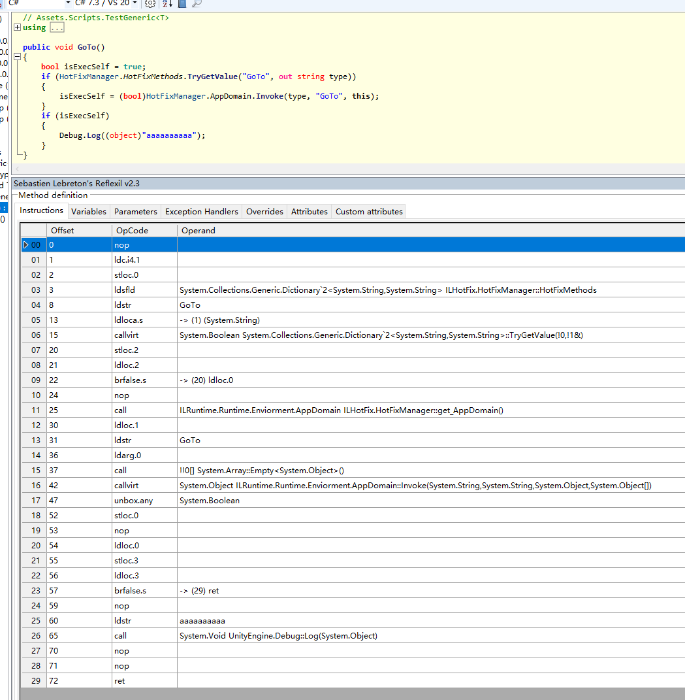

Unity的AssetStore下载package的时候经常抽风，而且开了代理工具的全局代理依然无效。
检索网络后得知，这是因为它下载的时候不检测IE代理设置，而是取环境变量中HTTPS_proxy和HTTP_proxy的值，所以添加这两个变量并指定其为你的代理服务地址就可以了。
具体步骤：
Unity的AssetStore下载package的时候经常抽风，而且开了代理工具的全局代理依然无效。
检索网络后得知，这是因为它下载的时候不检测IE代理设置，而是取环境变量中HTTPS_proxy和HTTP_proxy的值，所以添加这两个变量并指定其为你的代理服务地址就可以了。
具体步骤：
In this post I describe how to run Quartz.NET jobs using an ASP.NET Core hosted service. I show how to create a simple IJob, a custom IJobFactory, and a QuartzHostedService that runs jobs while your application is running. I’ll also touch on some of the issues to aware of, namely of using scoped services inside singleton classes.
As per their website:
我们把游戏的前进分为一帧帧，这里的帧和游戏的渲染帧率并不是一个，只是借鉴了帧的概念，自定义的帧，我们称为turn。游戏的过程就是每一个turn不断向前推进，每一个玩家的turn推进速度一致。
每一帧只有当服务器集齐了所有玩家的操作指令，也就是输入确定了之后，才可以进行计算，进入下一个turn，否则就要等待最慢的玩家。之后再广播给所有的玩家。如此才能保证帧一致。
Lockstep的游戏是严格按照turn向前推进的，如果有人延迟比较高，其他玩家必须等待该玩家跟上之后再继续计算，不存在某个玩家领先或落后其他玩家若干个turn的情况。使用Lockstep同步机制的游戏中，每个玩家的延迟都等于延迟最高的那个人。
由于大家的turn一致，以及输入固定，所以每一步所有客户端的计算结果都一致的。
我们来看看具体的执行流程:
问题引入：在mmorpg游戏中，群战的时候，玩家释放技能，这时候会出现技能冷却时间，每一个技能都是一个定时器，或者在slg游戏中，玩家修建房屋，创建基地，都会产生一个延时操作，等到了指定时间后，完成房屋修建等任务！！！！！
轮询的尴尬：使用一个定时器，定时遍历多个链表，判定链表里面的任务是否到期！ 效率低下,每一次遍历都需要筛选定时器，时间复杂度O（n）.
多定时器的尴尬：同时创建多个定时器，每个定时器绑定到期任务，多定时器，会加大cpu的负荷，且任务的到期时间不同，必定会产生更多的定时器。
写汇编码比较麻烦,可以试下下面的方法,先写好你要注入的代码,然后编译好,使用ilsyp查看…选择到要注入的代码再使用Reflexil工具查看

先创建一个文件Directory.Build.props
1 | <Project> |
然后修改你的项目文件